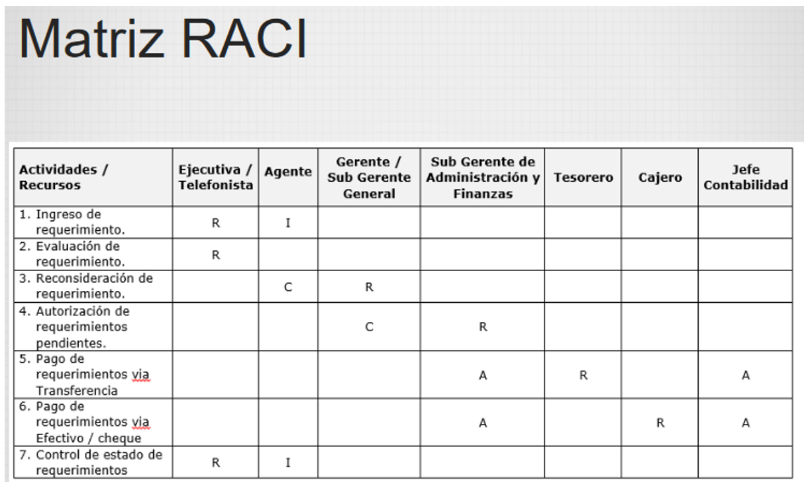
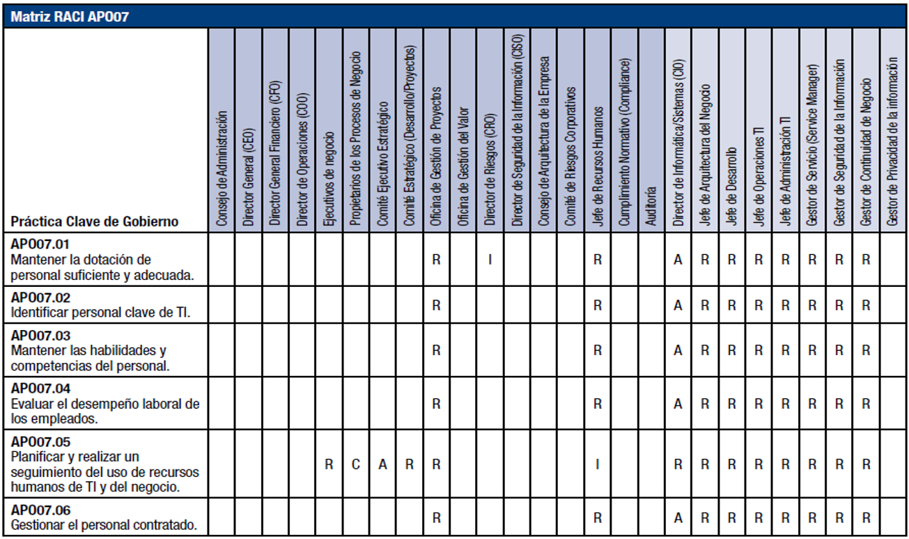

La Matriz RACI
La matriz RACI define quién es Responsable de que se haga, Responsable de la verificación, Consultado e Informado para una tarea.

R: Responsible / Responsable. Es el que se encarga de hacer la tarea o actividad.
A: Accountable / Persona a cargo. Es la persona que es responsable de que la tarea esté hecha. No es lo mismo que la R, ya que no tiene porqué ser quien realiza la tarea, puede delegarlo en otros. Sin embargo, si es quien debe asegurarse de que la tarea se haga, y se haga bien.
C: Consulted / Consultar. Los recursos con este rol son las personas con las que hay consultar datos o decisiones con respecto a la actividad o proceso que se define.
I: Informed / Informar. A estas personas se las informa de las decisiones que se toman, resultados que se producen, estados del servicio y grados de ejecución.
